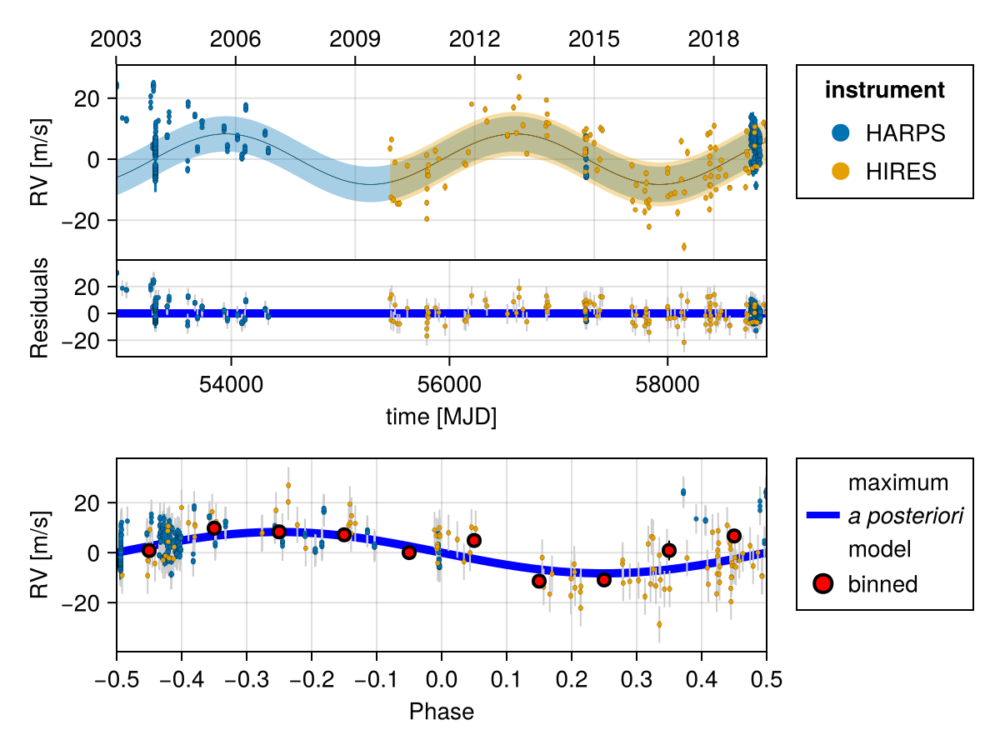
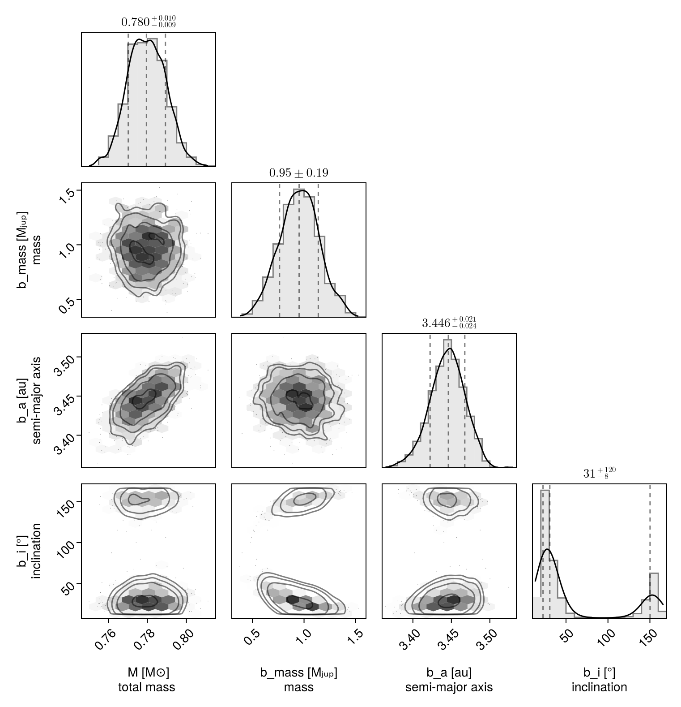

Fit RV and Astrometry
In this example, we will fit an orbit model to a combination of radial velocity and Hipparcos-GAIA proper motion anomaly for the star $\epsilon$ Eridani. We will use some of the radial velocity data collated in Mawet et al 2019.
Radial velocity modelling is supported in Octofitter via the extension package OctofitterRadialVelocity. To install it, run pkg> add OctofitterRadialVelocity
Datasets from two different radial velocity insturments are included and modelled together with separate jitters and instrumental offsets.
using Octofitter, OctofitterRadialVelocity, Distributions, PlanetOrbits, Plots
gaia_id = 5164707970261890560
@planet b Visual{KepOrbit} begin
e = 0
ω=0.0
mass ~ Uniform(0, 3)
a~Uniform(1, 5)
i~Sine()
Ω~UniformCircular()
τ ~ UniformCircular(1.0)
P = √(b.a^3/system.M)
tp = b.τ*b.P*365.25 + 58849 # reference epoch for τ. Choose an MJD date near your data.
end # No planet astrometry is included since it has not yet been directly detected
# Convert from JD to MJD
# Data tabulated from Mawet et al
jd(mjd) = mjd - 2400000.5
# # You could also specify it manually like so:
# rvs = StarAbsoluteRVLikelihood(
# (;inst_idx=1, epoch=jd(2455110.97985), rv=−6.54, σ_rv=1.30),
# (;inst_idx=1, epoch=jd(2455171.90825), rv=−3.33, σ_rv=1.09),
# ...
# )
# We will load in data from two RV
rvharps = OctofitterRadialVelocity.HARPS_RVBank_rvs("HD22049")
rvharps.table.inst_idx .= 1
rvhires = OctofitterRadialVelocity.HIRES_rvs("HD22049")
rvhires.table.inst_idx .= 2
rvs_merged = StarAbsoluteRVLikelihood(
cat(rvhires.table, rvharps.table,dims=1),
instrument_names=["HARPS", "HIRES"]
)
Plots.plot(rvs_merged)
@system ϵEri begin
M ~ truncated(Normal(0.78, 0.01),lower=0)
plx ~ gaia_plx(;gaia_id)
pmra ~ Normal(-975, 10)
pmdec ~ Normal(20, 10)
rv0_1 ~ Normal(0,10)
rv0_2 ~ Normal(0,10)
jitter_1 ~ truncated(Normal(0,10),lower=0)
jitter_2 ~ truncated(Normal(0,10),lower=0)
end HGCALikelihood(;gaia_id) rvs_merged b
# Build model
model = Octofitter.LogDensityModel(ϵEri; autodiff=:ForwardDiff, verbosity=4) # defaults are ForwardDiff, and verbosity=0LogDensityModel for System ϵEri of dimension 15 with fields .ℓπcallback and .∇ℓπcallback
Now sample:
using Random
rng = Random.Xoshiro(0)
results = octofit(rng, model)Chains MCMC chain (1000×34×1 Array{Float64, 3}):
Iterations = 1:1:1000
Number of chains = 1
Samples per chain = 1000
Wall duration = 397.09 seconds
Compute duration = 397.09 seconds
parameters = M, plx, pmra, pmdec, rv0_1, rv0_2, jitter_1, jitter_2, b_mass, b_a, b_i, b_Ωy, b_Ωx, b_τy, b_τx, b_e, b_ω, b_Ω, b_τ, b_P, b_tp
internals = n_steps, is_accept, acceptance_rate, hamiltonian_energy, hamiltonian_energy_error, max_hamiltonian_energy_error, tree_depth, numerical_error, step_size, nom_step_size, is_adapt, loglike, logpost, tree_depth, numerical_error
Summary Statistics
parameters mean std mcse ess_bulk ess_tail rhat ⋯
Symbol Float64 Float64 Float64 Float64 Float64 Float64 ⋯
M 0.7797 0.0096 0.0003 968.1638 725.4513 1.0010 ⋯
plx 310.5762 0.1327 0.0043 966.1772 553.0357 0.9999 ⋯
pmra -975.0453 0.0214 0.0007 1014.9885 741.3550 1.0002 ⋯
pmdec 20.0333 0.0155 0.0005 978.4090 841.9656 1.0014 ⋯
rv0_1 1.2726 0.5707 0.0212 719.6262 543.7389 0.9993 ⋯
rv0_2 -2.4220 0.7621 0.0297 637.6653 669.3535 1.0071 ⋯
jitter_1 5.9240 0.1597 0.0053 896.8308 738.6797 0.9997 ⋯
jitter_2 7.6078 0.5586 0.0210 706.9378 713.3474 1.0003 ⋯
b_mass 0.9543 0.1898 0.0069 756.5165 574.0479 1.0074 ⋯
b_a 3.4446 0.0227 0.0009 677.4854 704.5163 1.0030 ⋯
b_i 1.0430 0.9313 0.3021 16.8275 73.3556 1.0251 ⋯
b_Ωy -0.9291 0.1205 0.0045 754.4070 742.3869 0.9998 ⋯
b_Ωx -0.2615 0.2635 0.0158 275.9563 553.0357 1.0016 ⋯
b_τy -0.5461 0.0769 0.0028 778.3222 601.3335 0.9999 ⋯
b_τx -0.8353 0.0912 0.0037 633.3257 585.9921 1.0038 ⋯
b_e 0.0000 0.0000 NaN NaN NaN NaN ⋯
b_ω 0.0000 0.0000 NaN NaN NaN NaN ⋯
⋮ ⋮ ⋮ ⋮ ⋮ ⋮ ⋮ ⋱
1 column and 4 rows omitted
Quantiles
parameters 2.5% 25.0% 50.0% 75.0% 97.5%
Symbol Float64 Float64 Float64 Float64 Float64
M 0.7617 0.7730 0.7795 0.7867 0.7981
plx 310.2923 310.4914 310.5777 310.6662 310.8267
pmra -975.0885 -975.0599 -975.0453 -975.0311 -975.0052
pmdec 20.0018 20.0226 20.0336 20.0434 20.0638
rv0_1 0.1522 0.9064 1.2760 1.6460 2.3740
rv0_2 -3.8351 -2.9573 -2.3971 -1.8960 -0.9621
jitter_1 5.6217 5.8115 5.9215 6.0256 6.2353
jitter_2 6.6207 7.2224 7.5669 7.9742 8.7505
b_mass 0.5833 0.8287 0.9524 1.0840 1.3384
b_a 3.3960 3.4299 3.4461 3.4600 3.4873
b_i 0.3170 0.4333 0.5356 1.5809 2.7863
b_Ωy -1.1596 -1.0060 -0.9307 -0.8565 -0.6715
b_Ωx -0.7247 -0.4555 -0.2729 -0.0764 0.2714
b_τy -0.7089 -0.5978 -0.5412 -0.4935 -0.4115
b_τx -1.0128 -0.8947 -0.8347 -0.7742 -0.6628
b_e 0.0000 0.0000 0.0000 0.0000 0.0000
b_ω 0.0000 0.0000 0.0000 0.0000 0.0000
⋮ ⋮ ⋮ ⋮ ⋮ ⋮
4 rows omitted
We can now plot the results with a multi-panel plot:
## Save results plot
octoplot(model, results, cmap=:greys, clims=(-0.5,1))
We can also plot just the RV fit:
fig = OctofitterRadialVelocity.rvpostplot(model, results)
using CairoMakie, PairPlots
octocorner(model, results, small=true)